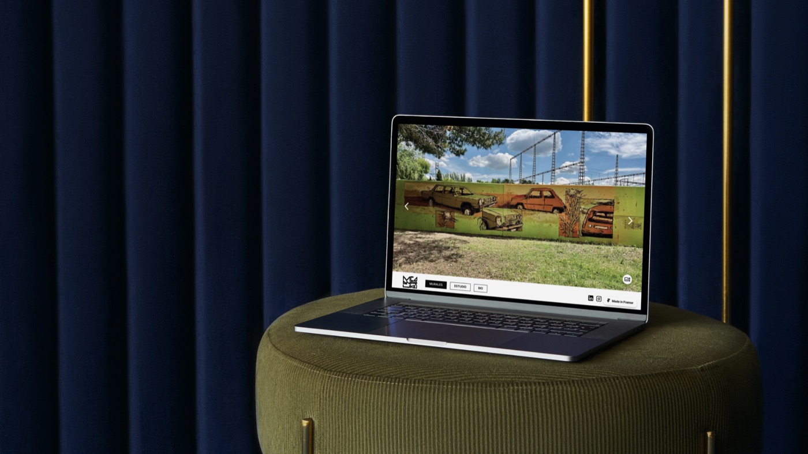
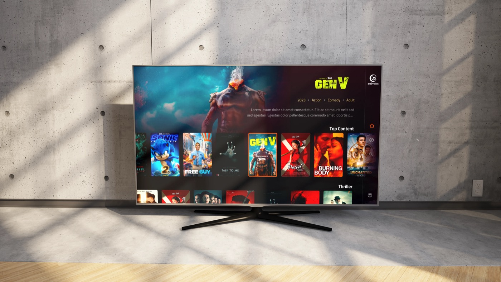
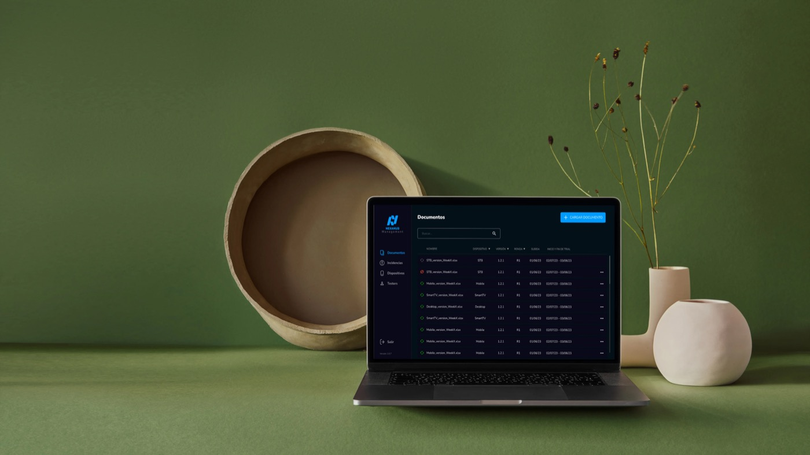
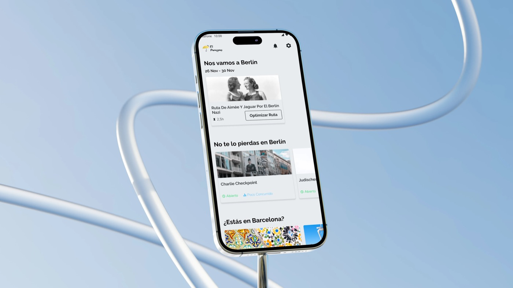

Personal · 2024
Manu Cardiel
Exposición virtual del arte de Manu Cardiel, con un sistema propio para que él gestione el contenido.
→

Cliente · 2023
Adrenaline
App deportiva whitelabel: estadísticas, TV en vivo y VOD para clientes premium.
🔒 Privado — bajo NDA 🔒 Bloqueado
🔒 Bloqueado
Cliente · 2023
Arabvision
Streaming OTT para móvil y Android TV: Live TV y VOD en cualquier dispositivo.
🔒 Privado — bajo NDA
🔒 Bloqueado
Cliente · 2022
Nexahub
CMS para que QA gestione tickets de JIRA sin fricción dentro del ecosistema Nexahub.
🔒 Privado — bajo NDA
🔒 Bloqueado
Bootcamp · 2021
El Paraguas
Una app de viajes para la nueva normalidad post-pandemia: guías, en cualquier momento.
→
